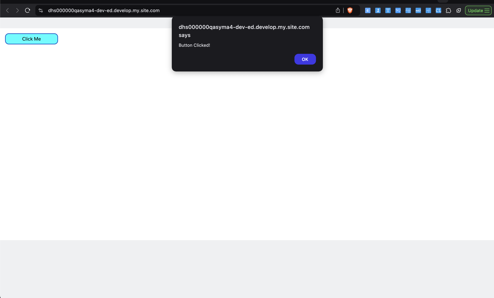
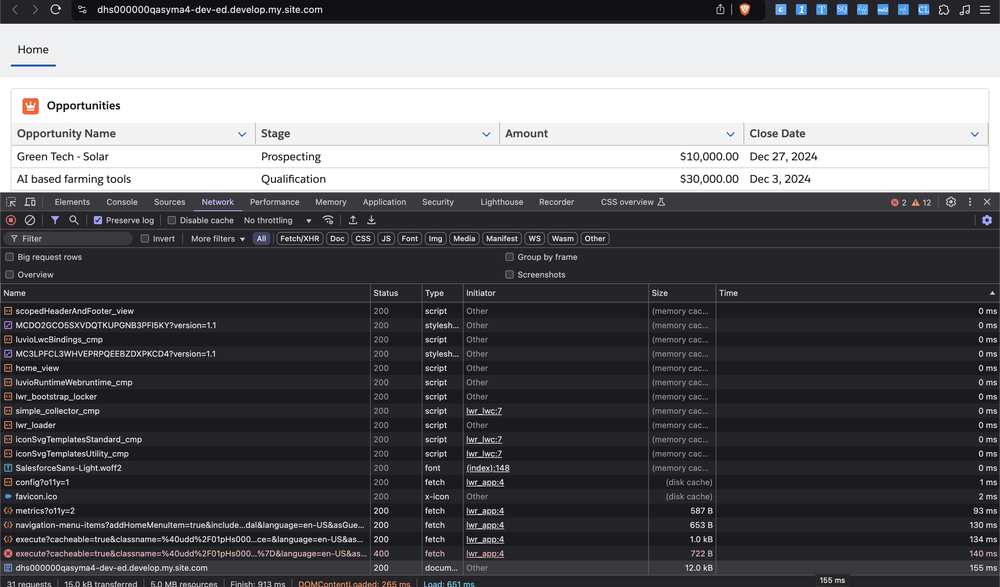

Creating a LWR Site using CLI
List The templates available
sf community template list
=== Site list template result
Template Name Publisher
───────────────────────────── ──────────
Build Your Own Salesforce
Help Center Salesforce
Microsite (LWR) Salesforce
Customer Account Portal Salesforce
Aloha Salesforce
Partner Central Salesforce
Customer Service Salesforce
Build Your Own (LWR) Salesforce
Salesforce Tabs + Visualforce Salesforce
Create Site
sf community create --name "HelloWorldLWR" --template-name "Build Your Own (LWR)"
sf community create --name "HelloWorldLWR" --template-name "Build Your Own (LWR)" -p 'hw'
sf project generate -n lwrhw
target dir = /Users/saromo/lwr-work
create lwrhw/config/project-scratch-def.json
create lwrhw/README.md
create lwrhw/sfdx-project.json
create lwrhw/.husky/pre-commit
create lwrhw/.vscode/extensions.json
create lwrhw/.vscode/launch.json
create lwrhw/.vscode/settings.json
create lwrhw/force-app/main/default/lwc/.eslintrc.json
create lwrhw/force-app/main/default/aura/.eslintrc.json
create lwrhw/scripts/soql/account.soql
create lwrhw/scripts/apex/hello.apex
create lwrhw/.forceignore
create lwrhw/.gitignore
create lwrhw/.prettierignore
create lwrhw/.prettierrc
create lwrhw/jest.config.js
create lwrhw/package.json
cd lwrhw
Create LWC component - helloworld
sf lightning generate component --type lwc --name helloWorld --output-dir force-app/main/default/lwc
target dir = /Users/saromo/lwr-work/lwrhw/force-app/main/default/lwc
create force-app/main/default/lwc/helloWorld/helloWorld.js
create force-app/main/default/lwc/helloWorld/helloWorld.html
create force-app/main/default/lwc/helloWorld/__tests__/helloWorld.test.js
create force-app/main/default/lwc/helloWorld/helloWorld.js-meta.xml
➜ lwrhw tree
.
├── README.md
├── config
│ └── project-scratch-def.json
├── force-app
│ └── main
│ └── default
│ ├── applications
│ ├── aura
│ ├── classes
│ ├── contentassets
│ ├── flexipages
│ ├── layouts
│ ├── lwc
│ │ └── helloWorld
│ │ ├── __tests__
│ │ │ └── helloWorld.test.js
│ │ ├── helloWorld.html
│ │ ├── helloWorld.js
│ │ └── helloWorld.js-meta.xml
│ ├── objects
│ ├── permissionsets
│ ├── staticresources
│ ├── tabs
│ └── triggers
├── jest.config.js
├── package.json
├── scripts
│ ├── apex
│ │ └── hello.apex
│ └── soql
│ └── account.soql
└── sfdx-project.json
22 directories, 11 files
Deploy LWC component
sfdx force:source:deploy -p force-app/main/default/lwc/helloWorld
Deploying v59.0 metadata to mohan.chinnappan.n.ea10@gmail.com using the v62.0 SOAP API.
Deploy ID: 0AfHs00002kMggDKAS
DEPLOY PROGRESS | ████████████████████████████████████████ | 1/1 Components
=== Deployed Source
FULL NAME TYPE PROJECT PATH
────────── ──────────────────────── ────────────────────────────────────────────────────────────
helloWorld LightningComponentBundle force-app/main/default/lwc/helloWorld/helloWorld.css
helloWorld LightningComponentBundle force-app/main/default/lwc/helloWorld/helloWorld.html
helloWorld LightningComponentBundle force-app/main/default/lwc/helloWorld/helloWorld.js
helloWorld LightningComponentBundle force-app/main/default/lwc/helloWorld/helloWorld.js-meta.xml
Deploy Succeeded.

View the Site

Adding Opportunity List

Code for Opportunity List
<template>
<lightning-card title="Opportunities" icon-name="standard:opportunity">
<template if:true={opportunities}>
<lightning-datatable
key-field="Id"
data={opportunities}
columns={columns}
hide-checkbox-column="true">
</lightning-datatable>
</template>
<template if:true={error}>
<p class="slds-text-color_error">{error}</p>
</template>
</lightning-card>
</template>
import { LightningElement, wire } from 'lwc';
import getOpportunities from '@salesforce/apex/OpportunityController.getOpportunities';
const COLUMNS = [
{ label: 'Opportunity Name', fieldName: 'Name', type: 'text' },
{ label: 'Stage', fieldName: 'StageName', type: 'text' },
{ label: 'Amount', fieldName: 'Amount', type: 'currency' },
{ label: 'Close Date', fieldName: 'CloseDate', type: 'date' }
];
export default class OpportunityList extends LightningElement {
opportunities;
error;
columns = COLUMNS;
@wire(getOpportunities)
wiredOpportunities({ error, data }) {
if (data) {
this.opportunities = data;
this.error = undefined;
} else if (error) {
this.error = error.body.message;
this.opportunities = undefined;
}
}
}
<?xml version="1.0" encoding="UTF-8"?>
<LightningComponentBundle xmlns="http://soap.sforce.com/2006/04/metadata" fqn="helloWorld">
<apiVersion>60.0</apiVersion>
<isExposed>true</isExposed>
<masterLabel>Opportunity List</masterLabel>
<targets>
<target>lightning__AppPage</target>
<target>lightning__RecordPage</target>
<target>lightning__HomePage</target>
<target>lightningCommunity__Page</target>
</targets>
</LightningComponentBundle>
Apex Class
public with sharing class OpportunityController {
@AuraEnabled(cacheable=true)
public static List<Opportunity> getOpportunities() {
return [SELECT Id, Name, StageName, Amount, CloseDate FROM Opportunity LIMIT 10];
}
}
<?xml version="1.0" encoding="UTF-8"?>
<ApexClass xmlns="http://soap.sforce.com/2006/04/metadata" fqn="OpportunityController">
<apiVersion>60.0</apiVersion>
<status>Active</status>
</ApexClass>
sfdx force:source:deploy -p force-app/main/default/classes/OpportunityController.cls
sfdx force:source:deploy -p force-app/main/default/lwc/opportunityList
Network

HAR